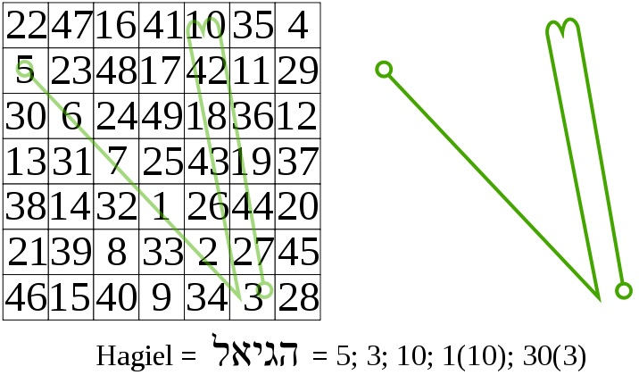
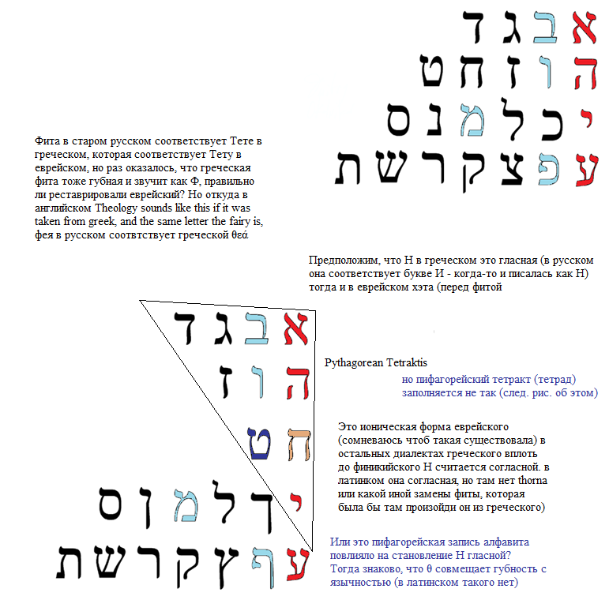
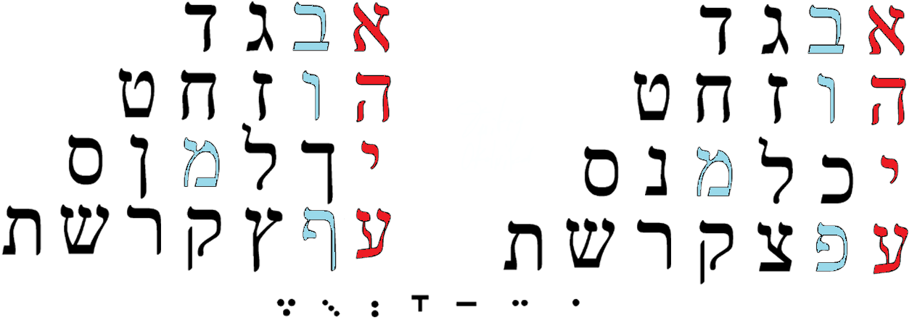
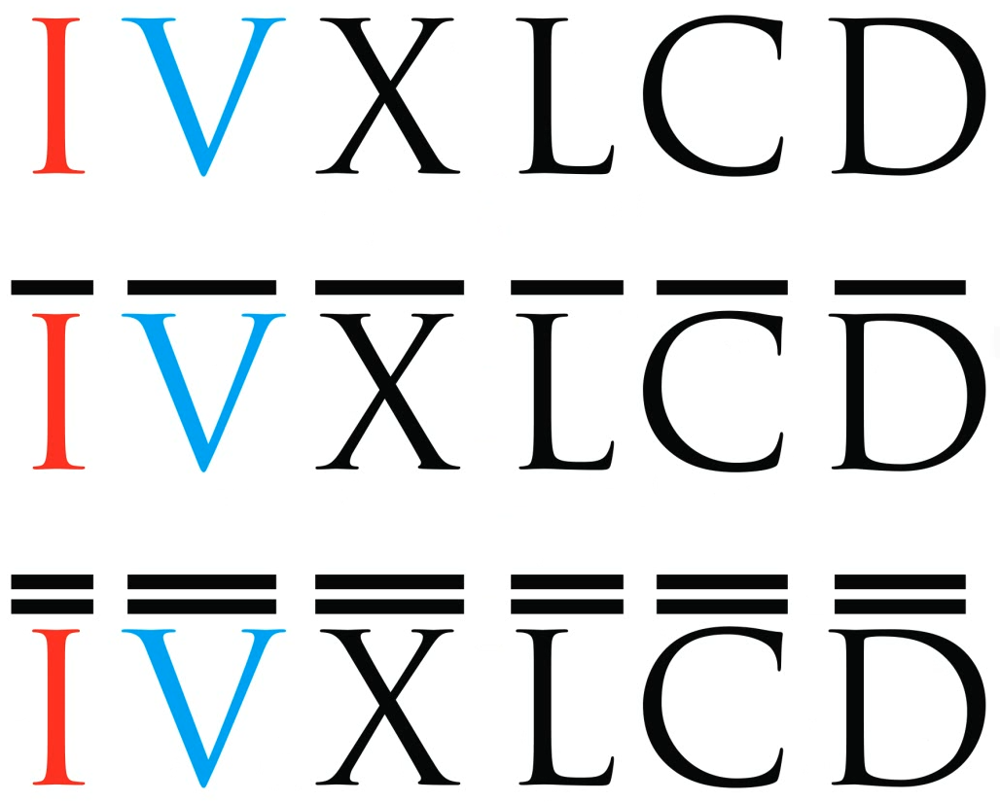

See how easily they equalize ones and tens, let’s compare it to the alphabetic structure:

It looks as if final forms are wrong: in initial forms kaf reflects beth and that’s the only reason. Other similarities may be explained by so much diverse causes that it’s hardly even scientific about now:
א looks like י only because it starts like that,
ב looks like כ indeed it does (but sounds differently)
ג looks like ל only because ל is for L and it looks like λ in greek
ד looks like מ (ם) only because they neighbour in damme, is it because Ma is Dea (see, trickery)
ה looks like נ (ן) only because they start alike
ו looks like ס even less then ד looks like מ, only if we consider it a snake but it’s even more tricky
ז looks like ע because they are named like zain and ain
ח looks like פ (ף) only because in japanese p sound is made of h by labialization sign.
ט looks like צ (ץ) only if we consider ט lingual (as they do officially now) then they sound alike
י looks not only like א but also like ק because א, י, ק are like 1, 10, 100
but it would be more reasonable if ק looked like כ that now looks like ר (as 20 and 200, but ב is also in their group
then ל looking like ג looks like ש which doesn’t make no sense other than ל looks like S in runic script
ת shares the cell of ד and מ, so hebrew doesn’t have a centre, because it folds 2,4 times. Funny, it only has 22 letters. It’s fine with me ת reflects ד but מ is so obviously misplaced even here. Though it does share some graphic elements with ת, is it because it was misplaced its graphics mutated so much from common european M form? Nope, it still looks like egyptian owl and it’s closer to the arabic form م , especially in its closed final form ם in hebrew compared to middle form of arabic: ـمـ this sign has three symbols, get it to the text editor and play with them.
Still, it’s hardly science now, more like just a fantasy, but the AEIOU lines used to be no less a fantasy than this one.
If we change places of M and K in hebrew, we have M in B group, and K being in the group of D and T, funny that today I found K being G which is acoustically much closer to D than K (and in russian they use sign similar to g when they mean to transcribe d letter: clerc, but clergy. I have a clergyphobia, that was my thought. I’d rather have no contacts with the government structures. All those people freak me out.
Final K is also use to be palatalized in Ч, that is tʃ, but does T transform in tʃ sometimes? Do соты go сочиться? Does род –> рожать count? Кати и качение родственны (подшипники качения таковы потому что катятся, а не качаются. Но слесаря могли быть слабы в филологии, давай ещё пример найдём. Крути –> кручение! This one is for sure.

But it’s weird that being so much gematric it doesn’t go all the way in hundreds.
Но некоторые буквы еврейского имеют альтернативные формы когда они стоят в конце слова, и где-то видел как их записывали в конец алфавита, так что природа их скорей всего гематрическая:
Но если ת = 400, то нужно 6 букв для завершения десятка, подумал я, а здесь лишь 5 дополнительных букв, но потом вижу, что нужно лишь 5: 1000 это уже следующий порядок. И в римских цифрах тоже порядок тысячами:

Расставим буквы по порядкам (вернее, развивая биологическую таксономию, по семействам)
Уберём софиты в третью строку:
кстати, если М поставить после гласной, к чему подталкивает ABCD-структура алфавита, она будет в одной группе с тоже губной ב, тогда כ можно поставить меж ד и ת, благо и т и к смягчаются до ч, и обе язычны, это выявляет более архаичные сходства.
Забавно, что еврейский алфавит с добавленными софитами заканчивается на Z (как и русский со своим я=аз, и ץ is oh so ижица, но это лишь показывает сколь большим многообразием обладают формы алфавита, что всегда есть шансы утонуть в пучине предположений. Хотя количество софитов (конечных форм) совпадающее с необходимым до завершения порядка впечатляет – возможно я невольно заимствовал эту идею оттуда, где видел такой алфавитный строй)
Кстати, гематрический строй явно говорит, что тета язычная. Возможно её неправильно переняли в греческий, а заимствовавшие греческие слова европейцы сопоставляли греческие буквы с известными им еврейскими, и потому производили транслитерацию фиты как th. Русские же напрямую получили греческий алфавит с греческой фонетикой, где «тета» свучит именно что как «фита»
(видео той гречанки, произносящей буквы дельта и фита)
блог не подразумевает редакторской правки, потому я отказался от немедленной публикации работы там, но свой сайт можно редактировать как угодно. Do.